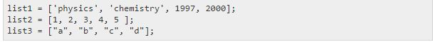
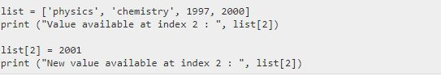
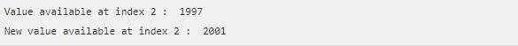
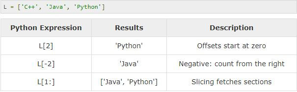
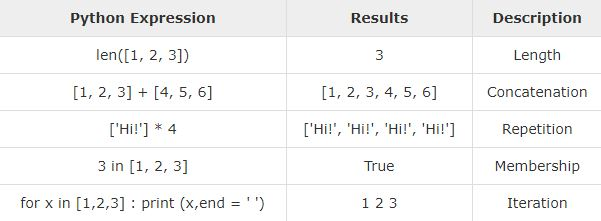

Lists
Python has six built-in types of sequences, but the most common ones are lists and tuples, which
we would see in this tutorial.
There are certain things you can do with all the sequence types. These operations include
indexing, slicing, adding, multiplying, and checking for membership. In addition, Python has
built-in functions for finding the length of a sequence and for finding its largest and smallest
elements.
The list is the most versatile datatype available in Python, which can be written as a list
of comma-separated values (items) between square brackets. Important thing about a list is
that the items in a list need not be of the same type.
Creating a list is as simple as putting different comma-separated values between square
brackets. For example −

Updating lists
You can update single or multiple elements of lists by giving the slice on the left-hand
side of the assignment operator, and you can add to elements in a list with the append()
method. For example −

When the above code is executed, it produces the following result −

Indexing and Slicing
Since lists are sequences, indexing and slicing work the same way for lists as they do for
strings.
Assuming the following input −

Basic List Operations
Lists respond to the + and * operators much like strings; they mean concatenation and repetition
here too, except that the result is a new list, not a string.
In fact, lists respond to all of the general sequence operations we used on strings in the prior
chapter.

List Methods
Python includes the following list methods −
- list.append(obj) ----- Appends object obj to list
- list.count(obj) ----- Returns count of how many times obj occurs in list
- list.remove(obj) ----- Removes object obj from list
- list.reverse() ----- Reverses objects of list in place
- list.insert(index,obj) ----- Inserts object obj into list at offset indext